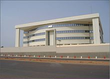

Economy of Guinea-Bissau
|  Central Bank of Guinea-Bissau in Bissau | |
| Currency | CFA franc |
|---|---|
| Calendar Year | |
Trade organisations | AU, African Development Bank, ECOWAS, World Bank, IMF, WTO, Group of 77 |
| Statistics | |
| GDP | [1] |
GDP growth |
|
GDP per capita | $1,989 (PPP) (2017 est.) Rank: 214 (2017 est.) |
GDP by sector | agriculture (50%) industry (13.1%) services (36.90%) (2017 est.) |
Population below poverty line | 67% with less than $2/day (2015 est.) |
| 50.7 (2010) | |
Labour force | 731,300 (2013 est.) |
Labour force by occupation | agriculture (82%) industry and services (18%) (2000 est.) |
| Unemployment | N/A |
Main industries | food processing, beer, soft drinks |
| External | |
| Exports | |
Export goods | fish, cashew nuts, gold, ores, lumber (2019) |
Main export partners | (2019.) |
| Imports | |
Import goods | refined petroleum, rice, soups and broths, wheat products, malt extract |
Main import partners | (2019) |
Gross external debt | |
| Public finances | |
| Revenues | $246.2 million (2017 est.) |
| Expenses | $263.5 million (2017 est.) |
| Economic aid | $170.2 million (31 December 2012 est.) |
All values, unless otherwise stated, are in US dollars. | |
The economy of Guinea-Bissau comprises a mixture of state-owned and private companies.[3] Guinea-Bissau is among the world's least developed nations and one of the 10 poorest countries in the world, and depends mainly on agriculture and fishing. Cashew crops have increased remarkably in recent years, and the country ranked ninth in cashew production for the year 2019.[4]
Guinea-Bissau exports to Asia non-fillet frozen fish and seafood, peanuts, palm kernels, and timber. License fees for fishing in their sea-zone (Gulf of Guinea) provide the government with some small revenue. Rice is the major crop and staple food. Due to European regulations, fish and cashew-nuts exports to Europe are totally prohibited as well as agriculture products in general.
Economic history
[edit]Early colonialism
[edit]From a European viewpoint, the economic history of the Guinea Coast is largely associated with slavery. Indeed, one of the alternative names for the region was the Slave Coast. When the Portuguese first sailed down the Atlantic coast of Africa in the 1430s, they were interested in gold. Ever since Mansa Musa, king of the Mali Empire, made his pilgrimage to Mecca in 1325, with 500 slaves and 100 camels (each carrying gold) the region had become synonymous with such wealth. The trade from sub-Saharan Africa was controlled by the Islamic Empire which stretched along Africa's northern coast. Muslim trade routes across the Sahara, which had existed for centuries, involved salt, kola, textiles, fish, grain and slaves.[5]
As the Portuguese extended their influence around the coast, Mauritania, Senegambia (by 1445) and Guinea, they created trading posts. Rather than becoming direct competitors to the Muslim merchants, the expanding market opportunities in Europe and the Mediterranean resulted in increased trade across the Sahara.[6] In addition, the Portuguese merchants gained access to the interior via the Sénégal and Gambia rivers which bisected long-standing trans-Saharan routes.[7]
The Portuguese brought in copper ware, cloth, tools, wine and horses. Trade goods soon also included arms and ammunition. In exchange, the Portuguese received gold (transported from mines of the Akan deposits), pepper (a trade which lasted until Vasco da Gama reached India in 1498) and ivory.[7]
There was a very small market for African slaves as domestic workers in Europe, and as workers on the sugar plantations of the Mediterranean. The Portuguese found they could make considerable amounts of gold transporting slaves from one trading post to another, along the Atlantic coast of Africa. Muslim merchants had a high demand for slaves, which were used as porters on the trans-Saharan routes, and for sale in the Islamic Empire. The Portuguese found Muslim merchants entrenched along the African coast as far as the Bight of Benin.[7]
Before the arrival of the Europeans, the African slave trade, centuries old in Africa, was not yet the major feature of the coastal economy of Guinea. The expansion of trade occurs after the Portuguese reach this region in 1446, bringing great wealth to several local slave trading tribes. The Portuguese used slave labour to colonize and develop the previously uninhabited Cape Verde islands where they founded settlements and grew cotton and indigo. They then traded these goods, in the estuary of the Geba River, for black slaves captured by other black peoples in local African wars and raids.
The slaves were sold in Europe and, from the 16th century, in the Americas. The Company of Guinea was a Portuguese governative institution whose task was to deal with the spices and to fix the prices of the goods. It was called Casa da Guiné, Casa da Guiné e Mina from 1482 to 1483 and Casa da Índia e da Guiné in 1499. The local African rulers in Guinea, who prosper greatly from the slave trade, have no interest in allowing the Europeans any further inland than the fortified coastal settlements where the trading takes place. The Portuguese presence in Guinea was therefore largely limited to the port of Bissau.
Colonial era
[edit]As with the other Portuguese territories in mainland Africa (Portuguese Angola and Portuguese Mozambique), Portugal exercised control over the coastal areas of Portuguese Guinea when first laying claim to the whole region as a colony. For three decades there are costly and continuous campaigns to suppress the local African rulers. By 1915 this process was complete, enabling Portuguese colonial rule to progress in a relatively unruffled state - until the emergence of nationalist movements all over Africa in the 1950s.
For a brief period in the 1790s the British attempted to establish a rival foothold on an offshore island, at Bolama, but by the 19th century the Portuguese were sufficiently secure in Bissau to regard the neighbouring coastline as their own special territory. It was therefore natural for Portugal to lay claim to this region, soon to be known as Portuguese Guinea, when the European scramble for Africa began in the 1880s. Britain's interest in the region declined since the end of the British slave trade in 1807. After the abolition of slavery in the Portuguese overseas territories in the 1830s, the slave trade went into serious decline.
Portugal's main rivals were the French, their colonial neighbours along the coast on both sides - in Senegal and in the region which became French Guinea. The Portuguese presence in Guinea was not disputed by the French. The only point at issue was the precise line of the borders. This was established by agreement between the two colonial powers in two series of negotiations, in 1886 and 1902–5. Until the end of the 19th century, rubber was the main export.
As an overseas province
[edit]In 1951, when the Portuguese government overhauled the entire colonial system, all Portugal's colonies, including Portuguese Guinea, were renamed Overseas Provinces (Províncias Ultramarinas). New infrastructures were built for education, health, agriculture, transportation, commerce, services, and administration.
Cashew, peanut, rice, timber, livestock and fish were the main economic productions. The port of Bissau was one of the main employers and a very important source of taxes for the province's authorities.
Independence war
[edit]The fight for independence began in 1956, when Amílcar Cabral founded the Partido Africano da Independência da Guiné e Cabo Verde (Portuguese: African Party for the Independence of Guinea and Cape Verde), the PAIGC. In 1961, when a purely political campaign for independence had made predictably little progress, the PAIGC adopted guerrilla tactics. Although heavily outnumbered by Portuguese troops (approximately 30,000 Portuguese to some 10,000 guerrillas), the PAIGe had the great advantage of safe havens over the border in Senegal and Guinea, both recently independent of French rule.
Several communist countries supported the guerrillas with weapons and military training. The conflict in Portuguese Guinea involving the PAIGC guerrillas and the Portuguese Army was the most intense and damaging of all Portuguese Colonial War. Thus, during the 1960s and early 1970s, Portuguese development plans promoting strong economic growth and effective socioeconomic policies, like those applied by the Portuguese in the other two theaters of war (Portuguese Angola and Portuguese Mozambique), were not possible. In 1972 Cabral set up a government in exile in Conakry, the capital of neighbouring Guinea. It was there, in 1973, that he was assassinated outside his house - just a year before a left-wing military coup in Portugal dramatically altered the political situation.
By 1973 the PAIGC controlled most of the interior of the country, while the coastal and estuary towns, including the main population and economic centres, remained under Portuguese control. The village of Madina do Boé in the southeasternmost area of the territory, close to the border with neighbouring Guinea, was the location where PAIGC guerrillas declared the independence of Guinea-Bissau on September 24, 1973. The war in the colonies was increasingly unpopular in Portugal itself, as the people got weary of war and balked at its ever-rising expense. Following the coup d'état in Portugal in 1974, the new left-wing revolutionary government of Portugal began to negotiate with the PAIGC and decided to offer independence to all the overseas territories.
After independence
[edit]As his brother Amílcar Cabral had been assassinated in 1973, Luís Cabral became the first president of independent Guinea-Bissau in the time after independence was granted on September 10, 1974. Already as the President of Guinea-Bissau, Luís Cabral tried to impose a planned economy in the country, and supported a socialist model that left the economy of Guinea-Bissau itself ruined. Similarly, the repression imposed on the population by his authoritarian single-party regime,[8] and severe food shortages, also left marks.
Luís Cabral served from 1974 to 1980, when a military coup d'état led by João Bernardo "Nino" Vieira deposed him. Despite having always denied it, Luís Cabral was accused of being responsible for the death of a large number of black Guinea-Bissauan soldiers who had fought along with the Portuguese Army against the PAIGC guerrillas during the Portuguese Colonial War.[9] After the military coup, in 1980 PAIGC admitted in its official newspaper "Nó Pintcha" (dated November 29, 1980) that many were executed and buried in unmarked collective graves in the woods of Cumerá, Portogole and Mansabá. All these events did not help the new country to reach the level of prosperity, economic growth and development the new rulers had promised to its population.
In 1985 the first Chinese oversees fishing fleet to go abroad was sent to Guinea-Bissau, 13 trawlers from the China National Fisheries Corporation.[10]
In May 1997 Guinea-Bissau joined the francophone West African Monetary Union. Consequently, National Bank of Guinea-Bissau was converted as a national branch of Central Bank of West African States, and the national currency Guinea Bissau peso was replaced by West African CFA franc.[11]
Present day
[edit]Macro-economic trend
[edit]Following the April 2012 coup d'État growth plunged to reach -1.5% of GDP. In 2013, the country's GDP grew only by 0.9%. This low growth level during a period of democratic transition is explained by a combination of low administrative efficiency, low investments on account of the political instability and a bad cashew export season.[12] Key macroeconomic indicators estimated by the African Development Bank are presented in the chart below:
| Real GDP growth | 2013 | 2014 (estimate) | 2015 (projection) | 2016 (projection) |
|---|---|---|---|---|
| Real GDP per capita growth | 0.9 | 2.6 | 3.9 | 3.7 |
| Real GDP per capita growth | -1.5 | 0.2 | 1.6 | 1.3 |
| Budget balance % GDP | -1.4 | -2.1 | -3.9 | -3.4 |
| Current account balance % GDP | -4.1 | -0.5 | -0.8 | -1.2 |
Intermittent fighting between Senegalese-backed government troops and a military junta destroyed much of the country's infrastructure and caused widespread damage to the economy in 1998; the civil war led to a 28% drop in GDP that year, with partial recovery in 1999. Agricultural production is estimated to have fallen by 17% during the conflict. Cashew nut output, the main export crop, declined in 1998 by an estimated 30%. World cashew prices dropped by more than 50% in 2000, compounding the economic devastation caused by the conflict.
Before the war, trade reform and price liberalization were the most successful part of the country's structural adjustment program under IMF sponsorship. The tightening of monetary policy and the development of the private sector had also begun to reinvigorate the economy. Under the government's post-conflict economic and financial program, implemented with IMF and World Bank input, real GDP recovered in 1999 by almost 8%. In December 2000 Guinea-Bissau qualified for almost $800 million in debt-service relief under the first phase of the enhanced HIPC initiative and is scheduled to submit its Poverty Reduction Strategy Paper in March 2002. Guinea-Bissau will receive the bulk of its assistance under the enhanced HIPC initiative when it satisfies a number of conditions, including implementation of its Poverty Reduction Strategy Paper.
Because of high costs, the development of petroleum, phosphate, and other mineral resources is not a near-term prospect. The country produces 400,000 barrels/day of petrol.
Mean wages were $0.52 per man-hour in 2009. In 2019 the minimal monthly wage was around 35000 CFA = US$60.
The following table shows the main economic indicators in 1980–2017.[13]
| Year | GDP
(in bil. US$ PPP) |
GDP per capita
(in US$ PPP) |
GDP
(in bil. US$ nominal) |
GDP growth (real) |
Inflation (in Percent) |
Government debt (Percentage of GDP) |
|---|---|---|---|---|---|---|
| 1980 | 0.44 | 562 | 0.29 | 4.9 % | 65.8 % | ... |
| 1985 | 0.62 | 719 | 0.49 | 4.3 % | 112.7 % | ... |
| 1990 | 0.84 | 872 | 0.55 | 4.6 % | 33.0 % | ... |
| 1995 | 1.14 | 1,066 | 0.78 | 4.0 % | 45.1 % | ... |
| 2000 | 1.37 | 1,150 | 0.39 | 9.0 % | 8.6 % | 234 % |
| 2005 | 1.65 | 1,242 | 0.64 | 7.1 % | 3.4 % | 222 % |
| 2006 | 1.73 | 1,279 | 0.64 | 2.0 % | 2.0 % | 204 % |
| 2007 | 1.84 | 1,327 | 0.75 | 3.3 % | 4.6 % | 177 % |
| 2008 | 1.94 | 1,366 | 0.95 | 3.2 % | 10.4 % | 163 % |
| 2009 | 2.02 | 1,391 | 0.89 | 3.4 % | −1.6 % | 159 % |
| 2010 | 2.14 | 1,461 | 0.94 | 4.6 % | 1.0 % | 68 % |
| 2011 | 2.36 | 1,578 | 1.16 | 8.0 % | 5.0 % | 50 % |
| 2012 | 2.36 | 1,546 | 1.05 | −1.7 % | 2.1 % | 53 % |
| 2013 | 2.47 | 1,586 | 1.11 | 3.3 % | 0.8 % | 54 % |
| 2014 | 2.54 | 1,596 | 1.14 | 1.0 % | −1.0 % | 55 % |
| 2015 | 2.73 | 1,675 | 1.15 | 6.1 % | 1.5 % | 50 % |
| 2016 | 2.92 | 1,755 | 1.25 | 5.8 % | 1.5 % | 49 % |
| 2017 | 3.14 | 1,845 | 1.47 | 5.5 % | 1.1 % | 42 % |
Financial sector
[edit]The financial sector of Guinea-Bissau is relatively underdeveloped: in 2013, financial intermediation accounted for 4% of GDP,[12] banking penetration is below 1% of the population (IMF 2013. Article IV Consultations – Guinea-Bissau, IMF Country Report No 13/197) and access to finance is cited as the second most important constraint for businesses.[14] As of 2015, only four banks were operating in the country. According to the IMF, regional private foreign banks held about 65% of shares in the Bissau-Guinean banking system (IMF 2013). Banks are regulated by the WAEMU authorities. In the aftermath of the civil war (1998/1999), private sector credit had fallen below 1% of GDP. In 2003 the balance sheets of banks amounted to EUR 21.3 million. Since then credit to the economy has risen to nearly 13.8% of GDP.[14]
"Terra Ranka" (A fresh start): a new economic plan
[edit]On March 25, 2015, the Government of Guinea-Bissau convened an international donor conference in Brussels.[15] Hosted by the European Union with support from the UNDP and other partners including the African Development Bank and the World Bank, the country's major partners joined in welcoming the country's new vision up to 2025, and to put pledges forth for its strategic and operational plan dubbed "Terra Ranka" (A fresh start).[16] Pledges totalled EUR 1.3 billion.[16]
The strategic and operational plan is composed of six pillars: (i) peace and governance, (ii) infrastructure, (iii) industrialisation, (iv) urban development, (v) human development and (vi) biodiversity. Each of the pillars is composed of a series of structuring projects to be financed either through direct donor support or through the mobilisation of private funding.[17]
Income from waste dumping
[edit]In the 1980s Guinea-Bissau was part of a trend in the African continent toward the dumping of waste as a source of income. Plans to import toxic waste from Europe were cancelled after an international campaign to halt the trade.[18] The government was offered a contract to dispose of 15 million tons of toxic waste over a 15-year period. The income from it was equivalent to twice the value of its external debt. After strong pressure from other African countries and environmental groups the Guinea-Bissau government renounced the deal.[19]
Drug trafficking
[edit]Over the last decade European consumption of cocaine is believed to have tripled,[20] and West Africa has become a primary transit point for trafficking the drug from Colombia to Europe.[21] Guinea-Bissau is the leading West African country in this regard, with smugglers taking advantage of government corruption and disorder to operate unimpeded.[22] The army and police are alleged to be complicit, and a lack of boats or planes to patrol or control the vast sea-zone further brings them to turn a blind eye to cocaine shipments from Latin America.[23] The local population does not have access to the drug. Planes fly in, and use Guinea-Bissau's 88 remote islands, the majority of which are uninhabited.
Energy
[edit]As of 2019, only 28% of the total population had access to electricity, with only 7% of rural population and 56% of urban population having access to electricity.[24]
In 2016, 99% of electricity generation capacity came from fossil sources and 1% from renewable sources.[24]
See also
[edit]- Minister of Finance (Guinea-Bissau)
- Transport in Guinea-Bissau
- Telecommunications in Guinea-Bissau
- Agriculture in Guinea-Bissau
- Mining industry of Guinea-Bissau
- United Nations Economic Commission for Africa
References
[edit]- ^ "Guinea-Bissau - the World Factbook".
- ^ "Global Economic Prospects, January 2020 : Slow Growth, Policy Challenges" (PDF). openknowledge.worldbank.org. World Bank. p. 147. Retrieved 22 January 2020.
- ^ "Guinea-Bissau". Retrieved 27 October 2019.
- ^ "FAOSTAT". www.fao.org. Retrieved 2021-07-05.
- ^ A.L. Epstein, Urban Communities in Africa - Closed Systems and Open Minds, 1964
- ^ B.W. Hodder, Some Comments on the Origins of Traditional Markets in Africa South of the Sahara - Transactions of the Institute of British Geographers, 1965 - JSTOR
- ^ a b c H. Miner, The City in Modern Africa - 1967
- ^ Widening trajectories: Guinea Bissau and Cape Verde since independence, Norrie MacQueen Archived April 23, 2015, at the Wayback Machine
- ^ A history of postcolonial Lusophone Africa, A history of postcolonial Lusophone Africa, Patrick Chabal, Edition: C. Hurst & Co. Publishers, 2002, ISBN 1-85065-594-4, ISBN 978-1-85065-594-7
- ^ Urbina, Ian. "THE CRIMES BEHIND THE SEAFOOD YOU EAT". The New Yorker. newyorker.com. Retrieved 18 November 2023.
- ^ Mendy, Peter Michael Karibe; Lobban, Richard (2013). Historical dictionary of the Republic of Guinea-Bissau (4th ed.). Lanham (Md.): Scarecrow Press. ISBN 978-0-8108-8027-6.
- ^ a b "African Economic Outlook 2015: Guinea-Bissau" (PDF). Archived from the original (PDF) on 19 September 2015. Retrieved 20 January 2016.
- ^ "Report for Selected Countries and Subjects". Retrieved 2018-09-09.
- ^ a b Arvanitis, Yannis. "Providing Efficient Banking Services in a Fragile Environment: Structure, Performance and Perspectives of the Banking Sector in Guinea-Bissau" (PDF). African Development Bank. Retrieved 20 January 2016.
- ^ "Tera Ranka - Accueil". www.teraranka.gov.gw. Archived from the original on 2016-02-06. Retrieved 2016-01-28.
- ^ a b "Union européenne - SEAE (Service européen pour l'action extérieure) | Terra Ranka: un nouveau départ pour la Guinée-Bissau". eeas.europa.eu. Retrieved 2016-01-28.
- ^ Arvanitis, Yannis (December 2015). "Developing Public-Private Partnerships in Guinea-Bissau: Getting the Policy Framework Right" (PDF). African Development Bank: West Africa Policy Notes. Retrieved 2016-01-28.
- ^ Brooke, James (1988-09-25). "African Nations Barring Foreign Toxic Waste". The New York Times. Retrieved 2008-03-25.
- ^ Friman, H. Richard; Peter Andreas (1999). The Illicit Global Economy and State Power. Maryland, United States: Rowman and Littlefield. ISBN 0-8476-9303-1.
- ^ Walt, Vivienne (2007-06-27). "Cocaine Country". Time. Archived from the original on July 1, 2007. Retrieved 2009-07-13.
- ^ "Guinea Bissau requests INTERPOL assistance following major drugs seizure". Interpol. 2008-07-21. Archived from the original on 2008-08-14. Retrieved 2009-07-13.
- ^ Parenti, Christian (February 2009). "The Drug Coast". Playboy. Archived from the original on June 1, 2009. Retrieved 2009-07-13.
- ^ "How a tiny West African country became the world's first narco state". the Guardian. 2008-03-09. Retrieved 2020-10-17.
- ^ a b "Guinea-Bissau - The World Factbook". www.cia.gov. Retrieved 2021-07-05.
 This article incorporates public domain material from The World Factbook. CIA.
This article incorporates public domain material from The World Factbook. CIA.
External links
[edit]- Resources on Guinea-Bissau by the African Development Bank
- Economic development in Guinea-Bissau at Curlie
- Mineral resources of Guinea-Bissau
- Guinea-Bissau latest trade data on ITC Trade Map
- Africa's New Narcostate - photo essay by The Global Post

{kind=link}
{kind=link}